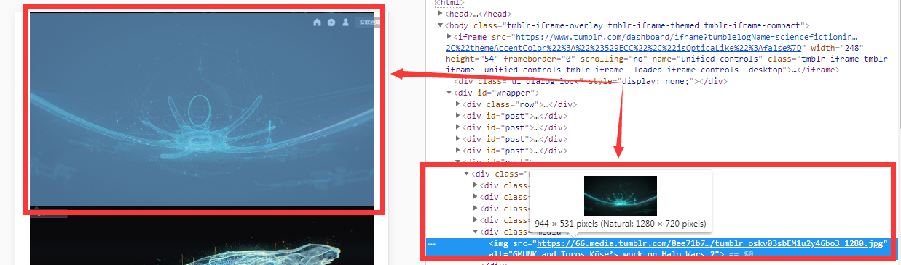
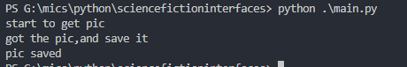

今天看了阮一峰老师的每周分享第 30期,里面有个讲到了“科幻界面",如下图：
这个分享链接指向了tumblr中一个收集科幻影视作品中出现的计算机画面，作为一个伪科幻迷，进入那个页面后，被里面的图片给深深的吸引了，当时就有个念头，把这些图片都下载下来，在脑海里想着有什么软件可以实现这个功能， 很久没进行这样的操作，之前一次有用软件下载网页中的图片，还是读大学的时候，用网海捨贝，不知道现在还能不能用，也懒得找了，索性就自己写个爬虫，把图片爬下来。这里使用Python。
1.先来个简单的，把网页读取下来：
import requests
url="http://sciencefictioninterfaces.tumblr.com/"
r = requests.get(url)
print(r.text)
使用requests,直接用get获取网页html数据，然后打印出来看能不能实现预期效果，执行结果如下：
由于该页面源码数据太大了，打印出来的都看不全，只打印前1000个字符，跟浏览器看到的页面源码对不对得上，代码修改为：
import requests
url="http://sciencefictioninterfaces.tumblr.com/"
r = requests.get(url)
print(r.text[0:1000])
执行结果如下：
浏览器中看到该页面前面部分为：

从上面两个图片可以看到，可以成功获取该页面html源码
2.
可以成功获取页面的html源码，图片在html源码中是个链接，在浏览器中打开开发者工具，点击一下页面中的某张图片，开发者工具就会定位到相应的html标签，该标签中可以看到该图片的链接，如下图：

现在先是个个下载图片的功能，代码如下：
import requests
print("start to get pic")
url="https://66.media.tumblr.com/8ee71b763666c1418d2d831fba00981a/tumblr_oskv03sbEM1u2y46bo3_1280.jpg"
r = requests.get(url)
print("got the pic,and save it")
f = open("hello.jpg",'wb')
f.write(r.content)
f.close()
print("pic saved")
使用requests的get方法获取图片的原始数据，然后把该数据保存为指定名字的图片，并加上了下调试信息，执行结果如下：

由于下载下来的图片是直接放在源码所在目录，到源码所在目录下看看有没有下载下来的图片，如下图：
可以看到该目录下有个“hello.jpg"文件，从上面的图片的中的可以看出，已近能够成功下载图片了，
3.
已近实现了获取页面的源码跟下载指定链接的图片，接下来只要实现了提取出页面源码中所有要下载的图片的链接并下载下来，就完成了，首先来分析一下该页面源码的结构，浏览器中，打开开发者工具，点击某张图片，定位到该图片在源码的位置，如下图：
从上图可以看到，图片标签是放在calss属性为media的div下，可以从这点来获取图片的链接，
4.
为了方便，我把该页面的源码拷贝下来，并赋值给一个变量，然后对这个变量进行分析，这样可以省去get过程的时间，如下图：
由于这个比较大，不能看到全部，上面部分是这个变量开始位置，下图是结束位置，8000行左右，
接下来就是分析这个数据了，这里使用BeautifulSoup(需要安装),首先导入BeautifulSoup，然后创建一个BeautifulSoup对象,这里使用lxml作为解析器：
from bs4 import BeautifulSoup
soup = BeautifulSoup(html,'lxml')
然后使用find_all方法获取所有class属性为media的div,如下：
parent = soup.find_all('div',class_='media')
然后在获取img标签，全部代码如下：
from bs4 import BeautifulSoup
soup = BeautifulSoup(html,'lxml')
parent = soup.find_all('div',class_='media')
img_url = []
for child in parent:
chi = child.find('img')
img_url.append(chi['src'])
for url in img_url:
print(url)
执行结果如下：
现在已近可以获取该页面的图片的链接了，
5.
接下来只要把上面实现的程序组合起来就行了，如下：
import requests
from bs4 import BeautifulSoup
source_url ="http://sciencefictioninterfaces.tumblr.com/"
print("get page's source code")
r = requests.get(source_url)
print("page's source code got,get img's url")
html = r.text
soup = BeautifulSoup(html,'lxml')
parent = soup.find_all('div',class_='media')
img_url = []
for child in parent:
chi = child.find('img')
img_url.append(chi['src'])
print("img's url is got,begin to download img")
i=0
for url in img_url:
img_name= "image/" + str(i) + url[-4:]
print("start to get the %d img" %(i), end=' ')
try:
img_source=requests.get(url)
print(" save the " + img_name )
f = open(img_name,'wb')
f.write(img_source.content)
f.close()
except:
print("get img faile")
i=i+1
上面的代码中还加了个计数，并用计数给图片命名，把图片保存到源码目录下的image文件夹中，执行结果如下：
image文件夹中的内容如下：
从以上两个图片可以看到，一共进行了60次下载图片操作，有两次失败，image文件夹中也正好有58张图片，由于这里访问tumblr需要FQ，网络不是很稳定，会失败也是正常的，这也爬虫脚本也算成功了
6.
真的成功了么？我是too yang too simple,后来我发现该页面下拉到底部的时候，还会加载更多的图片，那能不能用爬虫一次性下载该页面所有图片呢（包括需要下拉刷新才会加载的),还不知道，看来还需要再学学这方面的（PS:很久没接触爬虫了，之前学也是接触点皮毛）。后来我先把页面中的图片全部加载了，然后把页面的源码复制到这个爬虫的源码中，而不是直接通过该页面的链接来爬取，成功下载了358张图片（毕竟这次目的是下载图片），
这次能成功把图片下载下来也算是走运吧，给我碰到一个不是很复杂的网站，因为一个很简单的30几行的代码就可以实现，都不用加header,不用登陆。